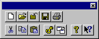

The toolbar appears at the top of the application window underneath the menu bar. It allows the user rapid access to a number of tools within CrypTool at the click of a mouse button.
Whether the toolbar is on view or concealed is controlled by selecting menu option Toolbar from the menu View (ALT-V-T).
You can also move the toolbar to any other edge of CrypTool. To do this, click with the mouse on a part of the toolbar that does not actually contain any buttons and then move the mouse holding the mouse button down (this is known as ”dragging”) to one of the edges of CrypTool, then release the mouse button.
If you drag the toolbar to a different part of the screen, the toolbar will appear in its own window which can be moved and altered in size.

The online help for a specific icon can be called up by first clicking  and then clicking another icon with the left mouse button. This also works, if
you click on a menu item secondly.
and then clicking another icon with the left mouse button. This also works, if
you click on a menu item secondly.
| Button | Action |
 |
Opens a new document. |
 |
Opens an existing document. CrypTool displays the Open dialog box, in which you can find and open the desired file. |
 |
Closes the active document. |
 |
Saves the active document or the active template under the current name. If you have not yet given a name to the document, CrypTool will display the Save As dialog box. |
 |
Prints the active document. |
 |
Removes the highlighted data from the document and transfers it to the clipboard. |
 |
Copies the highlighted data to the clipboard. |
 |
Inserts the contents of the clipboard at the insertion point. |
 |
Displays the key of the active document (only for classical and symmetrical algorithms). |
 |
Jumps to the parent window of the active document. |
 |
Displays the contributors, the version number and CrypTool copyright notice. |
|
Invokes the CrypTool Help facility. |